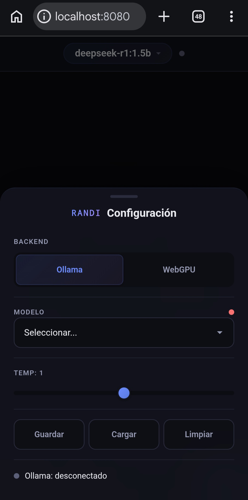

RANDI en Termux
Asistente de IA 100% local para Termux. Ejecuta DeepSeek, Qwen, Gemma y Mistral directamente en tu Android, sin conexión a internet ni consumo de tokens.

IA local con Ollama en Termux
RANDI instala Ollama nativo en Termux y descarga modelos de lenguaje para ejecutarlos en tu dispositivo. Sin nube, sin APIs, sin costos por uso.
Ollama nativo en Termux
El instalador instala Ollama directamente en Termux, sin proot ni máquinas virtuales.
Modelos locales
Descarga modelos como DeepSeek, Qwen, Gemma y Mistral. Una vez descargados, todo funciona sin conexión.
Chat TUI y web
Usa la terminal interactiva con streaming o abre una interfaz web con WebGPU para modelos pequeños.
IA de verdad, sin conexión
Todo lo que necesitas para tener un asistente de IA funcionando en tu Android ARM64.
100% local
Tus datos y conversaciones nunca salen de tu dispositivo. Sin nube ni terceros.
Sin consumo de tokens
Usa los modelos sin límites, sin cuentas y sin gastar en APIs o suscripciones.
WebGPU en el navegador
La interfaz web corre modelos pequeños (<2B) en la GPU con Transformers.js y los cachea en el navegador.
Instalación con un clic
Un script interactivo verifica el entorno, instala Ollama y deja tu asistente listo en minutos.
Compatibilidad con OpenCode
Con OpenCode instalado usa los modelos locales como provider, por ejemplo opencode -m ollama/qwen2.5-coder:7b.
Catálogo de modelos
Elige entre DeepSeek, Qwen, Gemma y Mistral en varios tamaños, de 0.5B a 8B, con un comando.
Visión y chat con imágenes
Sube imágenes en la web o con /image ruta en el TUI. Modelos llava, gemma3 y qwen2.5vl, 100% offline.
Voz
Texto a voz con espeak-ng/piper (🔊 en la web) y voz a texto con whisper.cpp (🎤).
Generación de imágenes
Crea imágenes con randi img "prompt" o 🎨 en la web, usando A1111/ComfyUI local (GPU).
Listo en pocos minutos
Elige tu nivel y copia el bloque de comandos.
# 1. Actualizar e instalar dependencias
pkg update && pkg upgrade -y
pkg install git curl tar -y
# 2. Clonar e instalar
git clone https://github.com/sebastianl1/randi_IA.git
cd randi_IA
bash install-ollama.shUsa el paquete nativo de Ollama para Termux (fallback npm). Instala Termux desde F-Droid, no de Google Play.
git clone https://github.com/sebastianl1/randi_IA.git
cd randi_IA
bash install-ollama.shEl instalador detecta la plataforma, verifica RAM/almacenamiento/arquitectura e instala Ollama con el script oficial. En macOS requiere Homebrew.
# Opcion A - WSL2 (recomendado)
wsl --install
sudo apt-get install -y git
git clone https://github.com/sebastianl1/randi_IA.git
cd randi_IA && bash install-ollama.sh
# Opcion B - Git Bash (Ollama nativo de Windows)
winget install Ollama.Ollama
git clone https://github.com/sebastianl1/randi_IA.git
cd randi_IA && bash install-ollama.shRANDI funciona en WSL2 o Git Bash/MSYS2. En Git Bash, Ollama corre como app nativa de Windows.
Empieza a usar RANDI
Comandos principales para trabajar con tu asistente de IA desde Termux.
randi # Iniciar el chat interactivo
randi chat -m model # Chat con un modelo específico
randi web # Abrir la interfaz web local
randi update # Actualizar RANDICompatibilidad con OpenCode
Si tienes OpenCode instalado, el instalador configura automáticamente los modelos locales de RANDI como provider:
opencode -m ollama/qwen2.5-coder:7b "Crea un script en Python"Catálogo de modelos
Modelos optimizados para Android ARM64, de 0.5B a 8B de parámetros.
Preguntas frecuentes
Resolvemos las dudas más comunes sobre RANDI en Termux.
RANDI es un asistente de IA 100% local para Termux en Android. Ejecuta modelos de lenguaje (LLMs) como DeepSeek, Qwen, Gemma y Mistral directamente en tu dispositivo, sin conexión a internet ni consumo de tokens.
No. Solo se necesita internet la primera vez para descargar los modelos; después RANDI funciona completamente sin conexión a internet ni consumo de tokens.
4GB de RAM, 3GB de almacenamiento libre, Android 11+ y Termux desde F-Droid. Para los modelos grandes se recomienda 8GB+ de RAM. Solo dispositivos ARM64 (aarch64).
La versión de Termux en Google Play está desactualizada y abandonada. La versión oficial se mantiene en F-Droid, que es la única compatible con este instalador.
randi web abre una interfaz web local con dos backends: Ollama para modelos grandes y WebGPU para modelos pequeños (<2B) que corren en la GPU del navegador con Transformers.js. Los modelos se cachean en el navegador.
Sí. Si tienes OpenCode instalado, el instalador configura automáticamente el provider local. Usa opencode -m ollama/qwen2.5-coder:7b o cualquier modelo como ollama/deepseek-r1:7b, ollama/qwen3:8b, ollama/gemma3:1b.
Ejecuta randi update para actualizar desde GitHub o localmente. Para agregar más modelos usa randi pull.
Usa modelos más pequeños. Revisa randi ps para ver los modelos en RAM y free -h para la memoria disponible.
Sí. Visión: sube una imagen en la web (📎) o con /image ruta en el TUI usando modelos llava, gemma3 o qwen2.5vl. Texto a voz: botón 🔊 (espeak-ng/piper). Voz a texto: botón 🎤 (whisper.cpp, build manual). Generación de imágenes: randi img "prompt" o 🎨 con A1111/ComfyUI local (GPU).
No de forma realista en teléfonos o equipos sin GPU dedicada. Está en el roadmap de RANDI (ej. Wan 2.1 en Colab o GPUs de alto rendimiento).
Sí. RANDI es open source (MIT) y 100% local: tus conversaciones nunca salen de tu dispositivo. Solo necesitas internet la primera vez para descargar los modelos.
qwen2.5-coder:3b es el punto dulce (rápido y ligero). Para más potencia, qwen2.5-coder:7b corre cerrando apps y con el backend Vulkan instalado (pkg install ollama-backend-vulkan). Como agente usa opencode -m ollama/qwen2.5-coder:3b.